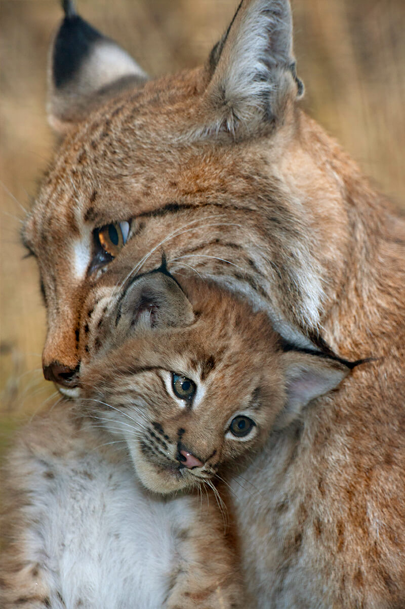
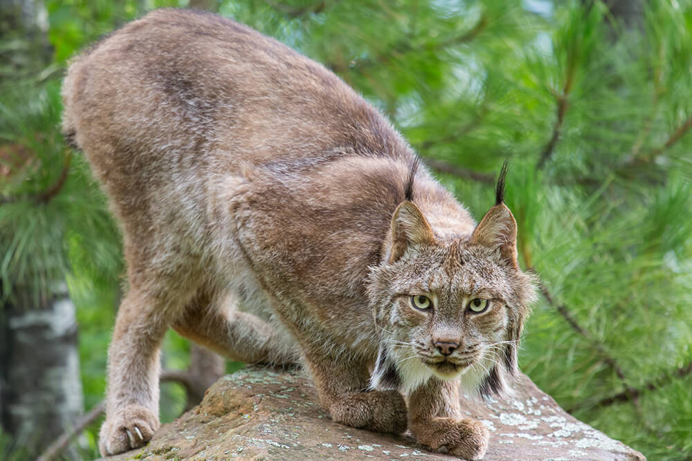
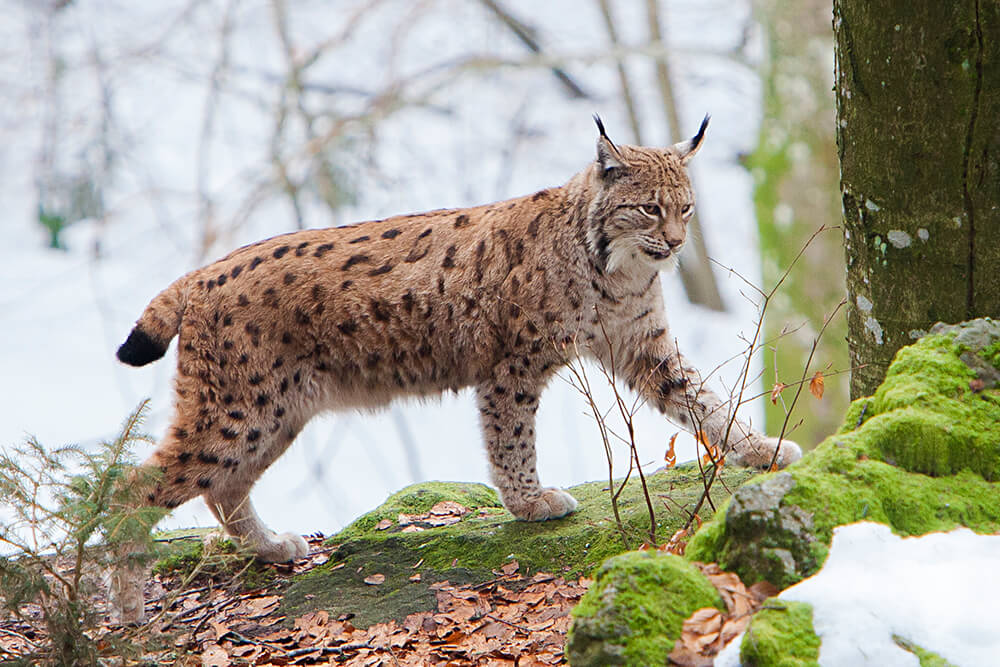
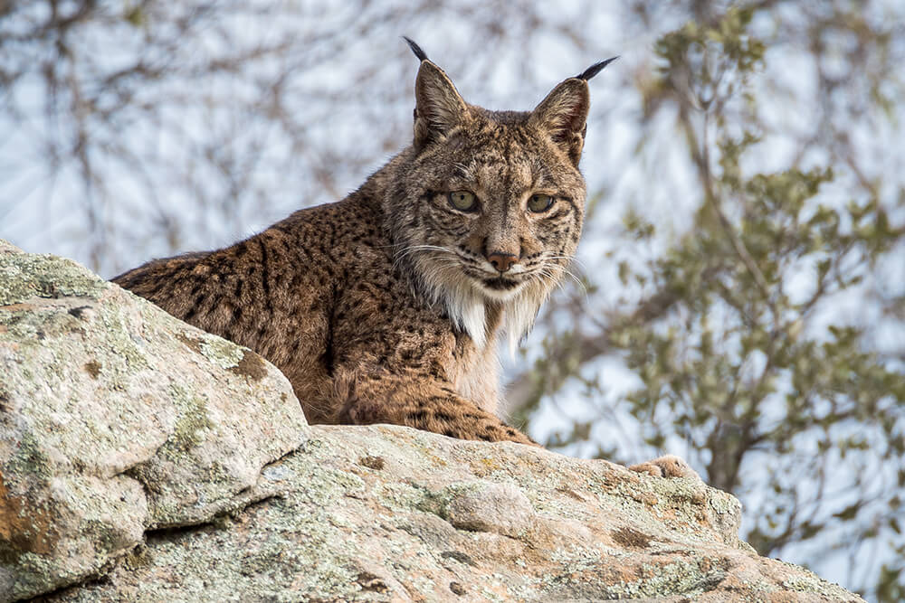
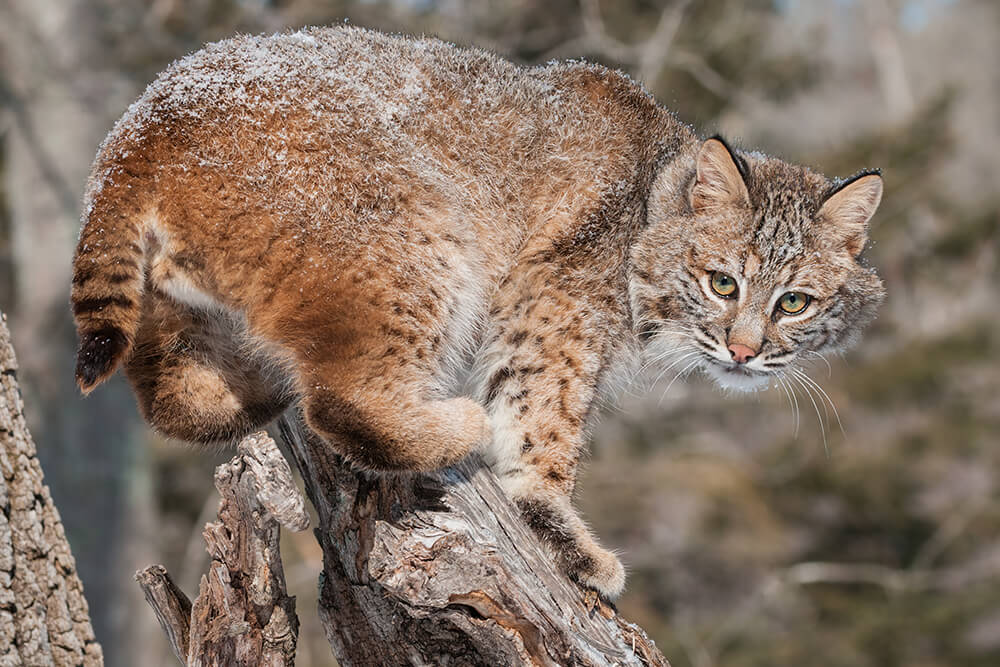

Lynxes are medium-size, solitary wildcats that roam the forests of North America, Europe, and Asia.
While their name comes from a Greek word meaning “to shine”—because of their reflective eyes—their defining features are the prominent tufts of hair above their ears, and their short, stubby tails.

Physical Specification
Scientific Name
Type
Diet
Size
Weight
Lynx
Mammals
Carnivore
32 to 47 inches long
22 to 44 pounds
Connecting lynx: There are four lynx species.
Canadian lynx
The Canadian lynxLynx canadensis, found in Canada and the northern US (including Alaska), is also known as the North American lynx. It has extremely thick, light brown or gray fur with light black spots. Adult males are just slightly larger than the females. Features unique to the Canadian lynx include a black tail tip and huge paws with long, thick fur to keep the cat’s toes warm in the winter. It can spread its toes out wide like snowshoes for walking in soft snow. Canadian lynx live in dense forests where their main prey, the snowshoe hare, lives. Since the hares are nocturnal, so are the cats. These cats are so dependent on the snowshoe hare for survival that when the hare population drastically drops, so does the lynx population.
Eurasian
The Eurasian lynx Lynx lynx has long, thick, light-colored fur that is silky in the winter and shorter, thinner, and darker in the summer. This is the largest and most numerous of the lynx species, and it is the most widespread, currently found in 46 countries in Europe, northern Asia, and the Middle East! A subspecies of Eurasian lynx, the Siberian lynx, is the largest of all; some males can weigh up to 84 pounds (38 kilograms).
Large paws with fur on the soles give Eurasian lynx traction; long legs also help when walking in deep snow. These cats are good swimmers, too, and have been seen crossing rivers. Their preferred diet is deer and other ungulates. Eurasian lynx living in Russia's Ural Mountains follow the winter migration routes of roe deer, reindeer, and moose.
Spanish or Iberian lynx
The Spanish or Iberian lynxLynx pardinus evolved separately from the rest of the Old World lynx populations, isolated from the rest of Europe by the Pyrenees Mountains. It is about half the size of the Eurasian lynx and has the most spots on its coat. Its hair is short and coarse for the milder Mediterranean climate.
The most rare of the lynx and possibly the rarest of all cats, the Spanish lynx is found in Spain and Portugal only. It lives in an area where millions of migrating birds gather together each spring and fall; although rabbits are the mainstay of their diet, the cats hunt ducks and other low-flying birds at this time.
The North American bobcat
The bobcat is known by lots of names: wildcat, bay lynx, and lynx cat. Some people call it the spitfire of the Animal Kingdom, because it seems fearless and won't back down from a fight! Found throughout North America, it is our continent's most common native cat.
Bobcats look very similar to Canadian lynx. But bobcats have smaller feet and don't have the furry soles of the other lynx, so they are not as well equipped to live in areas of heavy snow. Bobcats are able to survive in a variety of habitats, from deserts to swamps to forests, as long as there are places where they can hide. They often live in rocky areas that give them shelter from extreme cold or heat.